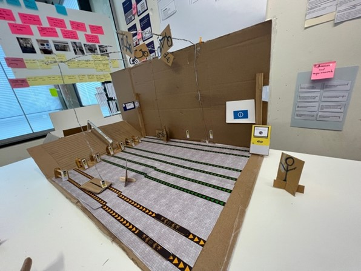

Project Shared Spaces
Skills:
- Research
- Design thinking
- Prototyping
- Testing
- 3D modeling
- 3D animation
Team:
- Edvins Šebeko
- He-sheng Zhao
- Matt Barlow
- Alexandru Vasilachi
Tools:
- Unity
- Blender
- Miro
Timeline:
- 5 months
Intro
One of most memorable projects I had the pleasure to work on in university is Shared Spaces. Here we were tasked with designing physical spaces and connected technology for various applications from real clients. Me and my team ended up working on redesigning the bicycle parking solution for train stations.
The challenge was to figure out a way to use space more efficiently, since train stations are running out of space for parking bicycles. We went through the entire design process in this project, by understanding the problem through research and analysis, we ideated prototyped several iterations and presented a final solution.
The problem presented was “Small train stations lack a solution for parking bicycles that fits combined travel by bicycle and train”
Research

In order to deeply understand our challenge after the initial briefing with the client, we had to get hands on and find out as much as we can on location. We used the following methods:
- Surveys to understand user perceptions and experiences with existing parking facilities at train stations.
- Observations to monitor the usage and condition of these facilities.
- Role Play to gauge user reactions and emotions in different scenarios.
- Desk Research to compile existing data and studies related to our challenge.
We managed to find out that different parking facilities at different stations were used in vastly different ways. Some were very neat and organized, while some others looked completely chaotic and messy. At more chaotic parking areas I managed to identify that the main issues were caused by the fact that people didn’t have time to use the facilities properly, were confused by the directions given, unwilling to use bike racks that required more effort, and that there simply weren’t enough spaces.
Our research revealed diverse usage patterns across different stations, from orderly to utterly chaotic parking arrangements. The chaos, I noted, stemmed from users' lack of time, confusion over directions, reluctance to engage with cumbersome bike racks, and a sheer shortage of parking spaces.
I also took the lead on a survey to capture user opinions on current facilities, their preferences, and their parking behavior. Key findings emphasized the importance users place on time, cost, organization, security, and convenience. An affinity diagram helped us distill our data into actionable insights, emphasizing the need for a safe, secure, convenient, and reliable parking solution. Armed with these insights, we presented our initial concepts to the client, selecting a direction that aligned with their preferences, our project's timeframe, and practical viability.
Design
Our design process was characterized by extensive prototyping and iteration, focusing on creating a solution that was intuitive and addressed the core issue of simplifying bicycle parking.
Ideation
We began by translating insights from research into How Might We questions. This helped us shift our focus towards finding solutions. Our ideation phase included:
- The Lotus Blossom technique to generate a wide range of ideas.
- Mash Up to combine ideas into five distinct concepts.
- An Evaluation Matrix to select the most viable idea.
- Concept Sketching for each team member to visualize their interpretation of the chosen idea.
- Synthesizing the best elements from each sketch into a unified concept.
The resulting concept is an automated storage system that stores bicycles above the area commuters walk through towards their trains. In order to store a bike, the user rolls it into a rack and taps their travel card for identifying the bicycle. After that they are free to continue their journey, while the system moves the bicycle to a concealed storage area. When coming back with the train, the user can use the check out gate to request their bicycle. The system then shows them where to search for it, and they are able to get it and cycle on. The walking paths feature screens showing walking directions, helping direct large crowds during peak times.
Prototype 1
We constructed an initial prototype using cardboard, metal wire, and paper to visualize our concept physically. This model facilitated iterations on user touchpoints, navigation paths, and potential design improvement opportunities.
User Testing
Limited testing opportunities focused our efforts on crucial system touchpoints, including the bicycle retrieval process and navigational guidance.
The tests we conducted were User Walktrough, where we filmed our physical prototype as if from a point of view of a user, a User Behaviour Map when influenced by walking directions indicated on the floor, and a Role Play of the touch points from our concept.
Prototype 2
The feedback and testing results we received told us some redesigns are needed. From the POV video we realized our concept can feel somewhat like being on a conveyor belt, and we needed to add some aesthetic quality. I suggested changing the overall shape of the building to an oval, which should make it more pleasant to be inside. Adding something to fill the middle should also help with dividing the flow of foot traffic into different directions.
At this point we decided it would be faster and easier to implement changes if we switch to 3D modeling software, so I modeled this iteration in Blender.
Prototype 3
To iterate one more time on the concept, I changed the shape again from an oval to a diamond, with added opening on the sides, allowing more flexible user movement and enhancing overall flow and accessibility.
Showcase
For our final presentation, I developed a high-fidelity 3D model in Unity, animating key interactions to demonstrate the design's functionality effectively. This approach ensured our ability to highlight essential features, and provide a comprehensive view of our solution in action.